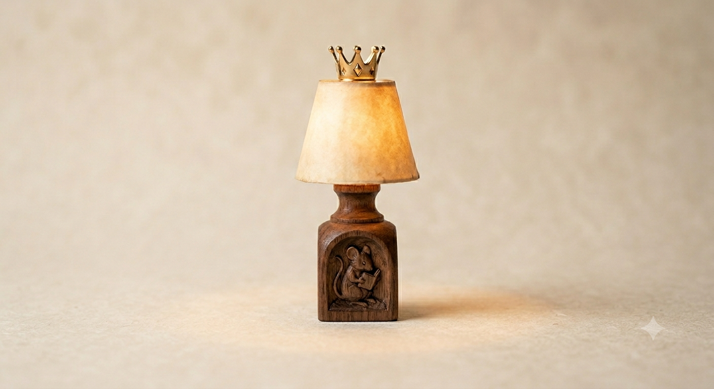

Warm Light for Quiet Moments
A miniature reading lamp designed for Passive Mouse’s cozy nook. Soft glow, tiny craftsmanship, and perfect for late‑night page flipping.
✦
Warm Glow Illumination
A gentle amber light that keeps the nook cozy without straining tiny eyes.
✦
Miniature Craftsmanship
Hand‑carved wooden base sized perfectly for a mouse’s reading corner.
✦
Energy Efficient
Runs on a single sunflower seed battery for up to 40 hours of reading time.
About the Cozy Nook Lamp
The Cozy Nook Lamp is crafted specifically for Passive Mouse’s reading environment. Its warm glow and miniature scale make it the perfect accessory for any quiet, comfortable space.
Each lamp is handmade with care, ensuring every nook feels warm, inviting, and ready for a good book.
Reserve Your Cozy Nook Lamp
Join the early batch list and be notified when the next production run opens.